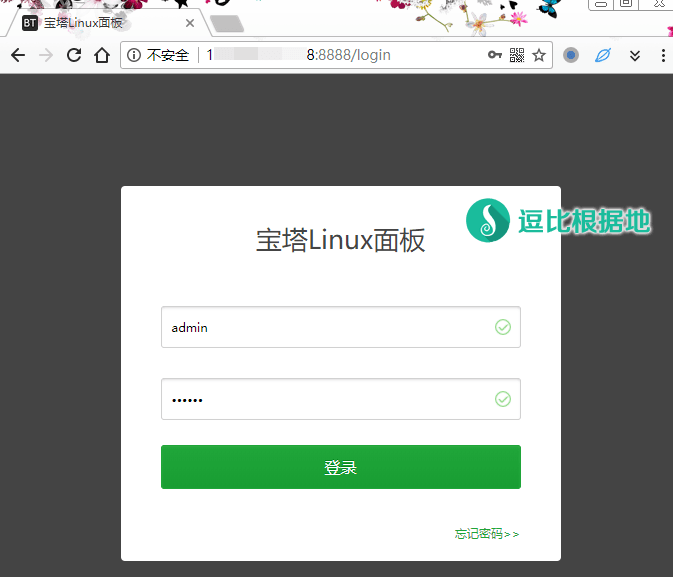
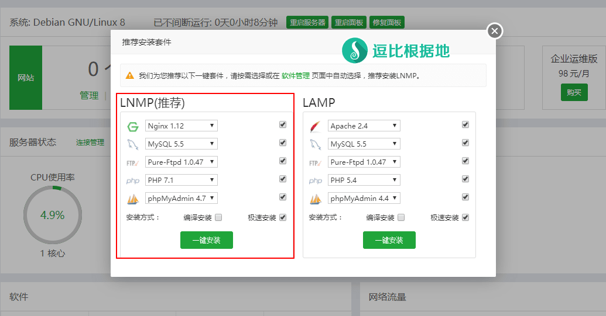
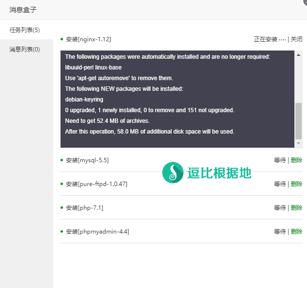
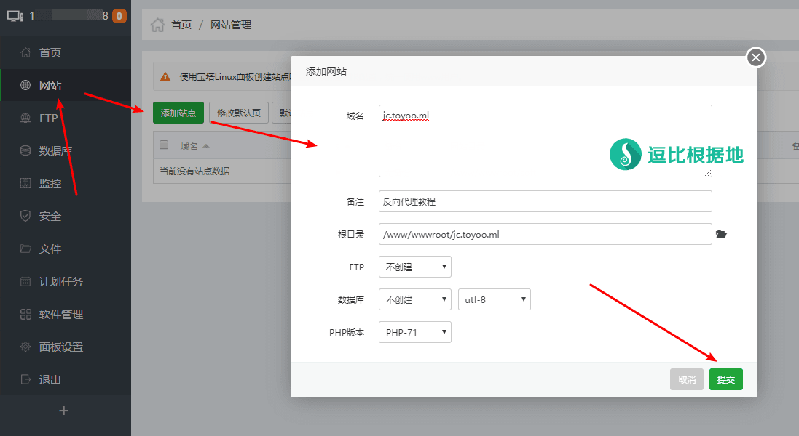
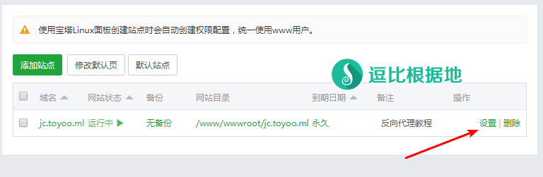
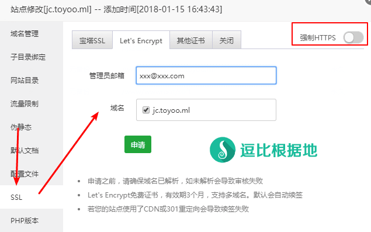
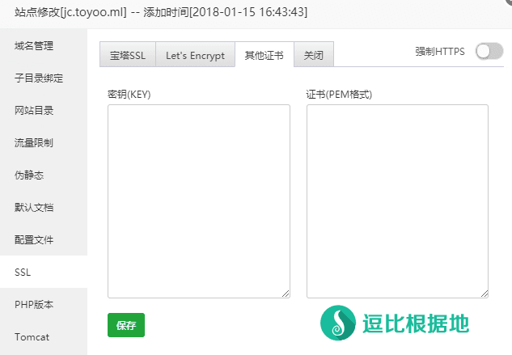
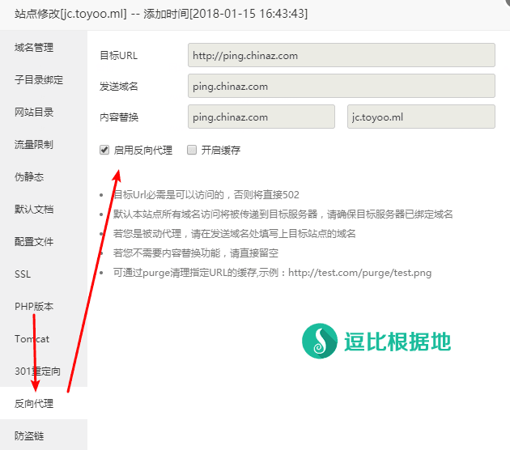
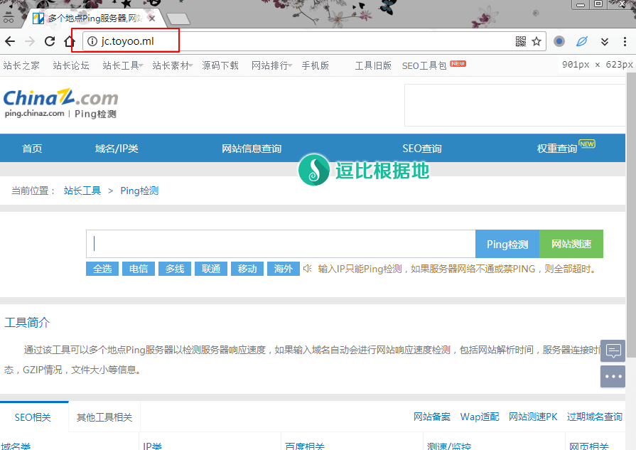

前几天的时候，因为网站丢失数据，最后重建网站了，以前一直用的是各种 LNMP 一键包（命令行管理），看别人推荐宝塔面板（网页面板管理），所以我也装了个试试，然后发现还挺好用的，这次就写个 宝塔面板中自带的一键配置反向代理功能，很好用，我的 镜像域名 doubmr.date 就是用这个一键完成的。
反向代理、镜像、CDN从某种程度上来说都是一回事，不过CDN是由大量服务器做反向代理+缓存实现的。
宝塔面板官网：http://www.bt.cn/
安装面板
安装前提
宝塔面板支持：CentOS、Ubuntu、Debian、Fedora 系统。
Python版本： 2.6/2.7（安装宝塔时会自动安装）
内存：128M以上，推荐512M以上（纯面板约占系统10M内存）
硬盘：100M以上可用硬盘空间（纯面板约占20M磁盘空间）
系统：安装宝塔面板前，请务必使用纯净的系统（也就是去重装一下服务器），没有安装过其它环境带的Apache/Nginx/php/MySQL！
面板特色功能：
- 一键配置服务器环境（LAMP/LNMP）
- 一键安全重启
- 一键创建管理网站、ftp、数据库
- 一键配置（定期备份、数据导入、伪静态、301、SSL、子目录、反向代理、切换PHP版本）
- 一键安装常用PHP扩展(fileinfo、intl、opcache、imap、memcache、apc、redis、ioncube、imagick)
- 数据库一键导入导出
- 系统监控（CPU、内存、磁盘IO、网络IO）
- 防火墙端口放行
- SSH开启与关闭及SSH端口更改
- 禁PING开启或关闭
- 方便高效的文件管理器（上传、下载、压缩、解压、查看、编辑等等）
- 计划任务（定期备份、日志切割、shell脚本）
- 软件管理（一键安装、卸载、版本切换）
安装步骤
请根据你的系统选择并执行以下命令：
# Centos 安装命令： yum install -y wget && wget -O install.sh http://download.bt.cn/install/install.sh && sh install.sh # Ubuntu/Deepin 安装命令： wget -O install.sh http://download.bt.cn/install/install-ubuntu.sh && sudo bash install.sh # Debian 安装命令： wget -O install.sh http://download.bt.cn/install/install-ubuntu.sh && bash install.sh # Fedora 安装命令: wget -O install.sh http://download.bt.cn/install/install.sh && bash install.sh
安装过程
以下为执行上面的安装命令后输出的内容：
配置面板
如果不出意外的情况下，安装面板后，就直接通过最后输出的 面板地址、面板账号、面板密码去登陆。

登陆面板后，会提示你安装网站环境套件，也就是LNMP LAMP 之类的。
注意这里！
当你只打算用宝塔面板做反向代理，不打算做网站的时候，只需要勾选LNMP中的 Nginx 选项，其他的 Mysql、PHP之类的全不需要勾选（当然那个安装方式：极速安装 要勾选），然后直接点击 一键安装 按钮就行了。
如果你想要做反向代理的时候同时做一些其它网站，或者不确定你以后会不会搭建其他网站，那么还是LNMP里面全选好了，然后点击 一键安装 按钮就行了。
关于版本：
Nginx 选择默认的 1.12 就行（目前是这个，一会的以宝塔面板默认版本为准）。
Mysql 数据库的话，如非必要就选择默认的 5.5 就行，如果要选择5.6及以上版本，则需要最少 1GB内存的服务器。
FTP 的话，默认就行。
PHP 这个需要注意，如果你要建网站的话，你要先确定你的网站是否支持 PHP 7.0/7.1/7.2（之一），如果不确定那么就选择 PHP 5.6 ，不过 PHP 7 系列版本相比 5.6 版本要更快更省资源。
phpMyAdmin 这个是数据库的可视化操作面板（和宝塔面板是两回事），如果你安装了 Mysql数据库，那么也建议你安装这个，至于版本默认就行。

当你点击 一键安装 按钮后，就会显示如下消息盒子，里面会看到各组件安装进度，下图是因为我安装这个面板除了写教程以外，一会也可以做点其他的事情，所以我是LNMP组件全都选了。
如果你只选择 Nginx 的话，那么安装就快多了。像我这种全选的，根据服务器网速和性能，我差不多要二三十分钟才能安装完。这还是选的 急速安装，如果是 编译安装，可能要四十多分钟才行。
对了，LNMP组件安装过程中，无法修改 宝塔面板的端口等信息，但是可以修改登录宝塔面板的用户名和密码，只要去宝塔面板侧栏的面板设置里就能看到。

配置反向代理
当你的 Nginx 或者 LNMP 安装完后，我们就可以开始配置反向代理了。
添加站点
点击宝塔面板侧栏 网站 - 添加站点。
然后会如下图所示，只需要填写 域名（支持绑定多个域名，一行一个）即可，备注自己看着设置（可选），至于其他的都不用管，直接点击 提交 按钮。

添加站点后，我们就会看到如下图所示，点击站点右边的 设置 选项。

如何配置SSL证书（可选）
如果你要反向代理 https 的网站，那么你也必须配置 SSL证书，而宝塔面板由三种方式配置：宝塔自己的SSL、Let's Encrypt 免费SSL、其他证书（手动填写）。
宝塔SSL：需要注册宝塔的账号，然后去免费领取好像？我没用过不清楚。
Let's Encrypt 免费SSL：在各个免费SSL证书中，最出名的可能就是 Let's Encrypt 了吧，这个每次是签3个月证书，可以无限续签（面板自动），免费域名也能申请。
其他证书：这个就是你自己去其他渠道不管是购买还是找免费的，获取到证书后填写到这里。
如果你要申请 Let's Encrypt 免费SSL ，那么首先你不能使用 CDN，然后需要去域名解析的地方解析域名，IP为当前服务器的IP，然后等一段时间使其解析全球生效，然后就如下图所示，填写一个可以用的邮箱，然后勾选你要申请SSL证书的域名，并点击 申请 按钮，如果不出意外，面板就会自动申请配置成功！
如果你需要强制使用 HTTPS，那么可以 开启 右上角的 强制HTTPS 功能。


配置反向代理
然后就会看到 站点设置窗口，找到侧栏的 反向代理 选项点击后，就如下图所示：
目标URL：你要反向代理的目标网站地址/域名
发送域名：填写你要反向代理的目标网站域名
内容替换：左边填写要替换的内容（目标域名），右边填写要替换为的内容（你的域名）
然后填写情况如下图所示：
按照下图的填写后，就是我访问 http://jc.toyoo.pw 看到的网站内容就是站长工具 超级Ping（http://ping.chinaz.com）的网页内容。
注意：如果你要反向代理 https 的网站，那么你这个域名也必须配置SSL才行，请配置反向代理前先配置好SSL，http 的则无所谓。
另外，建议开启缓存功能（图中忘记勾选了），开启缓存功能后，你访问反向代理的域名，会自动生成缓存，下次在访问就是直接发送缓存给你，就不需要反向代理服务器再去链接源网站获取信息了，可以显著加快速度。另外，默认情况下是缓存文件1个小时后自动到期，所以也不用担心缓存影响内容更新。

反向代理示例 效果如下：

好吧，到这里教程就结束了，宝塔面板我感觉还是挺好用的，大家可以多研究研究，反正都是中文的。
其他问题
打开 phpMyAdmin 提示 502 Bad Gateway 错误
这个错误我也遇到过一次，最后网上找了找，找到了解决方法：
首先进入宝塔面板后台，打开 phpMyAdmin 的设置窗口，选择左边侧栏的 php版本 后，直接再点击一次 保存 按钮即可。
打开 反向代理网站 提示 502 Bad Gateway 错误
反向代理出现这个错误，基本上就是你要反向代理的网站有反镜像措施，或者是挂了CDN。
如果是CDN，那么你要反向代理它就必须知道真实IP，然后在反向代理服务器设置 /etc/hosts 文件，添加相应规则，例如： 1.1.1.1 abc.com 。
有什么不懂得地方请在下面留言！
转载请超链接注明：逗比根据地 » 使用 宝塔面板(bt.cn) 快速部署 反向代理、镜像、自建CDN
责任声明：本站一切资源仅用作交流学习，请勿用作商业或违法行为！如造成任何后果，本站概不负责！


https://www.bt.cn/bbs/thread-1186-1-1.html
基础还是要自己学的（都是磕磕绊绊学过来的，我也是），不要指望靠一个教程一步登天。
或者 Telegram群组(TG使用教程)私聊联系我讨论解决。
可能需要替换文本这样写： http://a.com 替换为 https://b.com 。不过如果目标网站内有很多 http 链接，那么会无法建立安全SSL通道。
另外建议你使用我的两个SSR脚本试试，我写这个教程的服务器上面也装了SSR，使用起来没毛病。
评论里说不清，请 Telegram群组(TG使用教程)私聊联系我讨论解决。